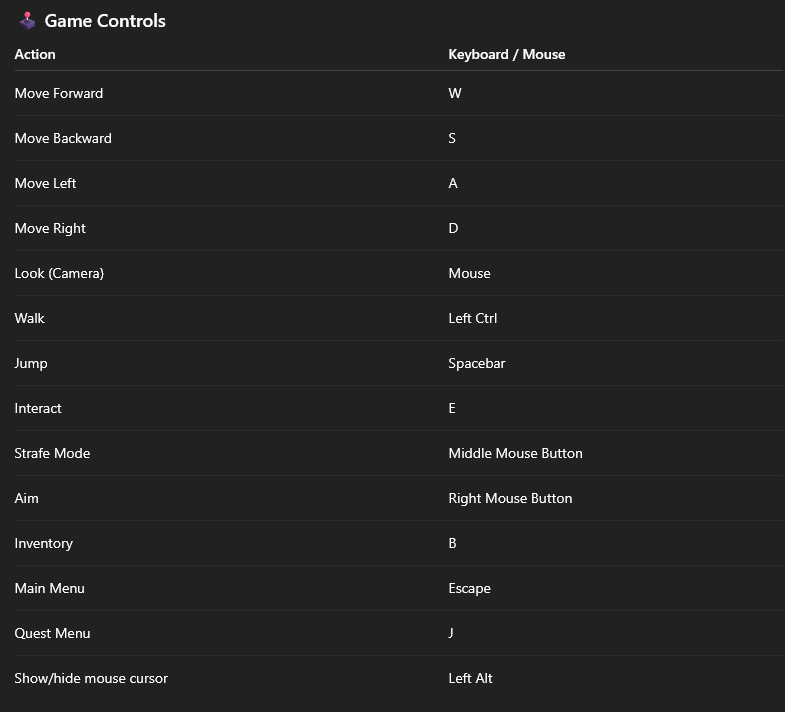
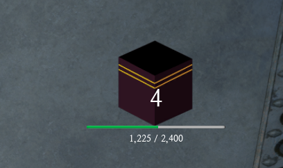

(5).png) The Last Message
The Last MessageINFORMATION ABOUT THE GAME
Where is the game able ?
Official on itch.io https://thelastmessage.itch.io/thelastmessage
Remarque:
require Configuration
need more tests
Game Controls
üìñ Beginner‚Äôs Guide
1. Main Menu
When you launch the game, you’ll see four buttons:
. Play → Starts the introduction animation and launches the basic tutorial.
. Load → Loads your saved game immediately (the game autosaves every 30 seconds).
. Options → Opens the settings menu.
. Quit → Closes the game.
2. Starting the Game & Tutorial
When you click Play, you’ll watch the introduction animation and then begin your journey in the desert, on the road to Mecca. This is where the tutorial takes place.
Tutorial Steps:
1- Follow the Yellow Marker
- Move toward the indicated point on the map.2- Open the Quest Journal
- Press J.
- Select the Tutorial mission.
- Close the journal.
3- Interact with the Lantern
- Approach the lantern.
- Hover your cursor over it.
- Press E to interact.
4- Meet the Traveler
- Go to the marked traveler.
- Interact the same way (E).
- Click the button on the right side of the screen to skip through dialogues.
5- Open a Chest
- After the dialogue, go to the chest.
- Interact to receive a scroll.
- Press B to open your inventory.
- Click the Close button at the bottom of the scroll to close it.
6- Rest in Your Tent
- Go to your tent and rest.
The tutorial is now complete.
3. Arrival in Mecca
You have now arrived in Mecca! From here, you can access the first main quest in the Quest Menu: Beginning of the Revelation.
Quest Objectives:
- Arrive in Mecca and find your way around.- Explore the market and observe its bustling life.
- Meet Zaid in the market.
- Follow Zaid to his adoptive father’s house.
- Meet Waraqa ibn Nawfal to learn more about the revelation.
- Reflect on the events with Zaid.
üèÆ Tutorial: Interactive Elements
Lanterns

There are three types of lanterns, each marking a different kind of location:
- Small Lanterns → Found near houses, representing general residential areas in Mecca.
- Medium Lanterns → Mark water sources such as wells.
- Large Lanterns → Mark important monuments such as the Kaaba.
How they work:
- When you approach a lantern, an information page opens, describing the location.
- You can interact with the lantern to receive rewards.
- All discovered location information is stored in your inventory and can be viewed anytime.
2. Scrolls
Scrolls come in three rarity levels:
- The two less rare types can be found scattered around the world.
- The rarest scrolls are obtained through special events.
Ways to obtain scrolls:
- Exploration and searching the world.
- Progressing through the story.
- Dialogues with NPCs.
- Gifts or purchases from shops.
Extra Tip:
- By speaking to Ikrima, you can unlock a map showing the location of all scrolls.
- Scrolls can be located outdoors or inside buildings.
- If a scroll is inside, you will see small lights at the building’s entrance.
Unlockable Feature with Ikrima:
- After collecting enough scrolls, return to Ikrima to access his Scroll Shop, which contains 6 hadiths from The Forty Nawawi for 3 Hasanats per scroll.
- You’ll also unlock a permanent event allowing you to obtain a random hadith from The Forty Nawawi in exchange for 1 Hasanat.
3. XP & Currency
Earning XP and Money:
- You can gain XP and currency through missions, events, exploration, and more.
- Each time you level up, the amount of XP required for the next level doubles.
Currencies in the Game:
Baraqa (Common Currency)
- Lower value currency.
- 100 Baraqa = 1 Hasanat.
- Used for basic purchases and minor progression.
Hasanat (Rare Currency)
- High-value currency.
- Used to purchase rare scrolls and other valuable items for progression.
Player Tips & Quick Commands
- Toggle Mouse Cursor: Press the Alt Gr key to show or hide your mouse cursor.
- Quick Teleport: Open your map and click on the "Go City Center" button to instantly teleport to the city center.
- Redeem Gift Codes: Go to Settings > General, then enter your code in the designated field.
Once the code is confirmed, you can claim your rewards in your mailbox.
- Delete Save Data: If you want to start over or fix a save issue, go to:
C:\Users\YOUR_NAME\AppData\Local\
and delete the GameAnimationSample file.